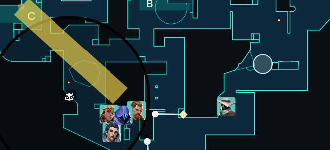
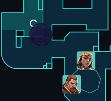

C default

Cypher could activate cage but should save one just incase you want to retake A
If you want to pause C and wait, this is a very good smoke as they will probably throw a smoke in main, or they have to peek from bend.
Good for lurking up as well